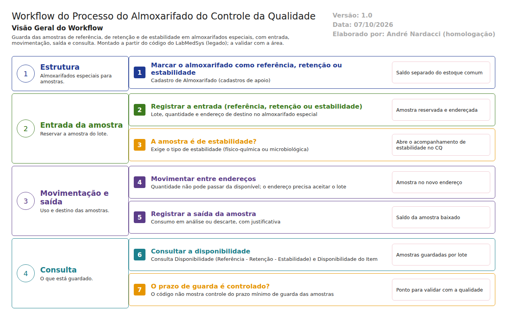

Objetivo
Este documento descreve o almoxarifado do Controle da Qualidade no LabMedSys: a guarda das amostras de referência, de retenção e de estabilidade, com entrada, movimentação, saída e consulta.
Foi montado a partir do código do sistema legado. O que depende da prática da área está marcado como a validar. Os casos de teste estão no fim.
Escopo
- Almoxarifados especiais (referência, retenção e estabilidade).
- Entrada da amostra e abertura do acompanhamento de estabilidade.
- Movimentação e saída das amostras.
- Consulta da disponibilidade.
Fora do escopo: os estudos de estabilidade e as análises em si, que são do módulo Controle da Qualidade.
Nomes das telas: como aparecem no alto de cada tela. A referência ao código fica só nas regras.
Visão geral do processo

Almoxarifados marcados como referência, retenção ou estabilidade guardam amostras dos lotes, e esse saldo fica separado do estoque comum. Na Entrada de Material (Referência - Retenção - Estabilidade), a amostra é reservada e endereçada. Se é de estabilidade, o sistema exige o tipo de estabilidade e abre o acompanhamento de estabilidade no Controle da Qualidade.
As amostras podem ser movimentadas entre endereços e baixadas na Saída de Material. A Consulta Disponibilidade mostra o que está guardado.
Descrição funcional das etapas
"A numeração das regras de negócio é reiniciada em cada atividade, visando facilitar sua identificação e manutenção."
Estrutura
Regras de negócio
- RN001 – O almoxarifado pode ser marcado como referência, retenção ou estabilidade (
TBL_ALMOXARIFADO, camposREFERENCIA,RETENCAO,ESTABILIDADE). O saldo nele aparece separado na disponibilidade e não conta como disponível para uso (visãoVW_SALDO_ITEM_LOTE_ENDERECO, almoxarifado especial).
Telas do sistema
| Módulo | Tela | Finalidade |
|---|---|---|
| Estoque | Almoxarifado (cadastros de apoio) | Marcar o tipo de almoxarifado |
Entrada da amostra
Regras de negócio
- RN001 – A entrada exige quantidade, almoxarifado, local, rua, coluna e andar, e o endereço precisa aceitar o lote ("Endereço não pode receber o lote!") (
cq/movimentacao_almox_cq_ed.aspx). - RN002 – O tipo da reserva vem do tipo de movimentação: entrada de referência, de retenção ou de estabilidade (
cq/movimentacoes_ed.aspx.cs:507-512). - RN003 – Amostra de estabilidade exige o tipo de estabilidade ("É necessário informar um tipo de estabilidade!") e abre o acompanhamento de estabilidade no Controle da Qualidade (
movimentacao_almox_cq_ed.aspx.cs:176-237).
Telas do sistema
| Módulo | Tela | Finalidade |
|---|---|---|
| Estoque | Entrada de Material (Referência - Retenção - Estabilidade) | Reservar a amostra |
| Estoque | Movimentação de Entrada | Detalhe da entrada |
Movimentação e saída
Regras de negócio
- RN001 – A quantidade movimentada não pode passar da disponível ("Quantidade movimentada não pode ser superior a quantidade disponível!"), e os endereços de origem e destino precisam ser válidos (
cq/movimentacoes_ed.aspx). - RN002 – A saída baixa o saldo da amostra, com justificativa (
cq/movimentacao_saida_lst.aspx). A validar com a área: se a saída distingue consumo em análise de descarte.
Telas do sistema
| Módulo | Tela | Finalidade |
|---|---|---|
| Estoque | Movimentações (Referência - Retenção - Estabilidade) | Movimentar amostras |
| Estoque | Saída de Material (Referência - Retenção - Estabilidade) | Baixar amostras |
Consulta
Regras de negócio
- RN001 – A consulta mostra as amostras guardadas por item e lote (
cq/consulta_disponibilidade_lst.aspx,cq/consulta_disponibilidade_ed.aspx).
Telas do sistema
| Módulo | Tela | Finalidade |
|---|---|---|
| Estoque | Consulta Disponibilidade (Referência - Retenção - Estabilidade) | Amostras guardadas |
| Estoque | Disponibilidade do Item | Detalhe por item |
Ponto para validar com a Garantia da Qualidade
O código não mostra controle do prazo de guarda das amostras. Não há data mínima de guarda nem trava contra a saída antes do prazo. A RDC 658/2022 pede que as amostras de referência e de retenção sejam guardadas por um período definido depois da validade do lote. Hoje, isso dependeria de controle fora do sistema.
Casos de teste
Dados: um almoxarifado TESTE ALMOX RETENCAO marcado como retenção e outro TESTE ALMOX ESTABILIDADE marcado como estabilidade, com local, rua, coluna e andar TESTE; o lote TESTEPA001 do produto acabado liberado.
| Caso | O que fazer | Resultado esperado |
|---|---|---|
| CT-EST-170 | Criar os almoxarifados de retenção e de estabilidade | Salvos; o saldo neles não conta como disponível |
| CT-EST-171 | Entrada de amostra de retenção do TESTEPA001 |
Amostra reservada e endereçada; aparece na consulta |
| CT-EST-172 | Entrada de amostra de estabilidade sem tipo de estabilidade | Recusa: "É necessário informar um tipo de estabilidade!" |
| CT-EST-173 | Entrada de estabilidade com tipo | Acompanhamento de estabilidade aberto no CQ (conferir no módulo CQ) |
| CT-EST-174 | Movimentar quantidade maior que a disponível | Recusa |
| CT-EST-175 | Procurar a amostra de retenção na Separação de Material | Não aparece (não é saldo disponível) |
| CT-EST-176 | Saída da amostra de retenção antes do vencimento do lote | Pela norma, deveria impedir ou alertar. Registrar com evidência se aceitar |
| CT-EST-177 | Histórico do lote TESTEPA001 |
Mostra a entrada e a saída da amostra |
| CT-EST-178 | Permissão: abrir Entrada de Material (Referência - Retenção - Estabilidade) pelo endereço com usuário sem acesso | Acesso negado (ver DV-EST-008) |